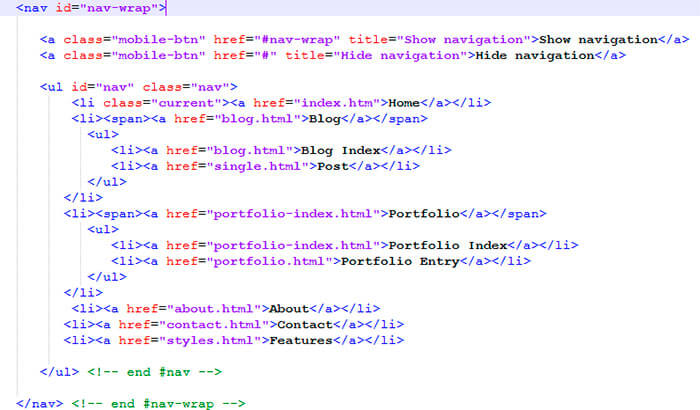

Адрес страницы articles/wp-reg-menu.html
Когда мы активируем нашу новую тему, то в консоли во Внешнем виде нет подпункта Меню. Потому что мы не зарегистрировали ещё не одно меню. Давайте сделаем это. Чтобы найти функции отвечающие за регистрацию меню в яндекс поиске можем так и написать -> вордпресс регистрация меню. Находим и добавляем в functions.php action хук:
functions.php
add_action('after_setup_theme', 'my_menu');
function my_menu(){
register_nav_menu('top_menu', 'меню в шапке');
}
top_menu - это идентификатор меню, который мы будем в вёрстке указывать.
меню в шапке - это описание меню, к которому мы в админке также будем привязываться.
В админке теперь появился подпункт Меню в разделе Внешний вид. Зайдя в него мы можем теперь создать своё меню, дать название(например, "Верхнее меню"), вложить в него страницы или просто произвольные пока ссылки, записи, рубрики. Далее жмём создать меню и появляется вверху новая вкладка - Управление областями, вот там как раз и будет видна наша меню с описанием - "меню в шапке", напротив неё будет селект в котором и выбираем из списка наших созданных менюшек в админке, то меню котрое мы только что создали - "Верхнее меню". Всё теперь мы связали наши 2 менюшки, ту что в админке - "Верхнее меню" с той что создали в functions.php - "меню в шапке". Осталось отобразить наше связанное меню в вёрстке по идентификатору "top_menu"
Чтобы отобразить в вёрстке для этого есть функция wp_nav_menu(). Если её вот так и написать. то выведется первое попавшееся меню из админки. Чтобы вывести конкретное меню, то нужно указать ряд настроек:
wp_nav_menu([
'theme_location' => '',
'menu' => '',
'container' => 'div',
'container_class' => '',
'container_id' => '',
'menu_class' => 'menu',
'menu_id' => '',
'echo' => true,
'fallback_cb' => 'wp_page_menu',
'before' => '',
'after' => '',
'link_before' => '',
'link_after' => '',
'items_wrap' =>'< ul id="%1$s"class="%2$s">%3$s< /ul>',
'depth' => 0,
'walker' => '',
]);
Этот список настроек по умолчанию, но нам нужны не все настройки.
'theme_location' - это как раз то место, где мы указываем идентификатор зарегистрированной меню - 'top_menu'
'container' - эта опция говорит о том, что вордпресс список ul запихнёт в div с кучей классов, нам такой div не нужен, поэтому ставим null в эту опцию.
Так как у нас в вёрстке у спика ul есть и id и class, также значит прописываем их в опциях menu_class и menu_id.
Пока у нашего админского меню не выделяется активным выбранный элемент меню, на странице которого мы находимся. Для этого нужно в вёрстке найти класс отечающий за подсветку активного пункта, это класс .current. В вордпрессе за активный пункт отвечает класс .current-menu-item. Теперь нужно в стилях найти наш .current и заменить его на .current-menu-item.
Теперь если посмотреть в вёрстку на пункты у которых есть плавно выезжающие подпункты, то у этих пунктов справа есть стрелка вниз. Она в верстке сделана с помощью span и у этого span есть псевдоэлемент after, который и застилен как раз в стрелку. Такой же span мы не можем перенести в лишки вордпресса, иначе сломается вёрстка, но мы можем назначить такой же псевдоэлемент самой лишке. Если мы добавим в админке лишке подменю, то у этой лишке появится класс от вордпресса .menu-item-has-children, вот к этому классу и добавим стили от псевдоэлемента. Со стрелком разобрались, теперь надо сделать подпункты для некоторых меню. Начнём с того как в админке мы заполняем наше меню. Для каждого пункта в данном случае мы создали страницу. Для этого слева в консоле в вордпрессе жмём на пункт Страница -> Создать новую, входим в редактор и даём название страницы такое же как и название пункта меню, потом справа жмём опубликовать. Для подпунктов также создаём такие же страницы с такими названиями как у подпунктов, только нужно указать справа в инпуте родительскую страницу. Например для подпунктов Blog Index и Post родительской страницей будет Blog. После того как все страницы созданы, их нужно добавить в меню в админке. Заходим в наше меню в админке и слева проставляем галочки на страницах, которые мы хотим добавить, жмём добавить, справа они добавятся и надо страницы-подпункты сдвинуть чуть право от своего родителя.
Дальше в принципе идёт процесс подгонки стилей к нашему админовскому меню, а старое меню мы удаляем.
Итоговые настройки для нашей менюшки:
<?php
wp_nav_menu([
'theme_location' => 'top_menu',
'container' => null,
'menu_class' => 'nav',
'menu_id' => 'nav',
]);
?>
В вёрстке также есть нижнее меню в подвале, оно такое же как и верхнее только немного с другими стилями. Для этого в functions.php регистрируем 2е меню там же в нашей функции register_menu:
<?php
add_action('after_setup_theme', 'register_menu');
function register_menu() {
register_nav_menu( 'top', 'Меню в шапке' );
register_nav_menu( 'footer', 'Меню в подвале' );
}
?>
А в вёрстке уже вместо нижнего меню пишем этот же крючок wp_nav_menu немного с другими настройками:
<?php
wp_nav_menu([
'theme_location' => 'footer',
'container' => null,
'menu_class' => 'footer-nav',
]);
?>
В админке создаём новое меню обзываем его Нижнее меню и привязываем его к нашему зарегестрированному меню Меню в подвале. Если для верхнего меню для каждого пункта мы создавали страницу, то для этого меню для пунктов создадим произвольные ссылки с адресами как у этих страниц. Вроде бы пока всё на этом.
Если надо посмотреть процесс подгонки стилей то можно посмотреть в видео начиная с 00:09:10
Проделываем регистрацию меню всё как выше описано. Например у нас лендинг и пункты верхнего меню ссылаются на разные id секций ниже по сайту, а не на отдельные страницы. Для этого при создании меню в админке добавляем ему произвольные ссылки, а не страницы и в адресах URL этой ссылки указываем id секции, например - #works, ну и название ссылки можно также назвать Works. Всё при нажатии на сайте на такую ссылку мы будем проматываться вниз в указанной секции.
Это меню выводится в зависимости от количества созданых страниц. Если мы создадим какую нибудь страницу, то в меню она автоматически добавится, но тут и минус есть, заказчик может добавлять себе какие нибудь страницы и они будут просто кучей вылазить в меню.
Это немного другой способ добавить меню, его мы уже не можем изменять из админки, оно только добавляется или удаляется в зависимости от добавления или удаления страниц(запись page). Например у нас есть вёрстака меню, удалим эту вёрстку и на её месте напишем код:
<?php wp_nav_menu( [
'container' => 'ul',
'menu_class' => 'top-nav-menu',
'menu_id' => '',
'echo' => true,
'fallback_cb' => 'wp_page_menu',
'before' => '',
'after' => '',
'link_before' => '',
'link_after' => '',
'items_wrap' => '< ul id="%1$s" class="%2$s">%3$s< /ul>',
'depth' => 0,
'walker' => '',
] ); ?>
Указываем контейнер ul как у нас в вёрстке и класс. Затем надо создать страницы точно такие как у нас в меню называются ссылки и главное, чтобы страницы шли в том порядке в какой они у нас в меню, нужно у каждой страницы нажать Свойство и выбрать порядок, начиная с 0. Сохраняем и должно на сайте вывестись точно такое же меню меню как и в вёрстке. если что в видео посмотреть с 00:09:05